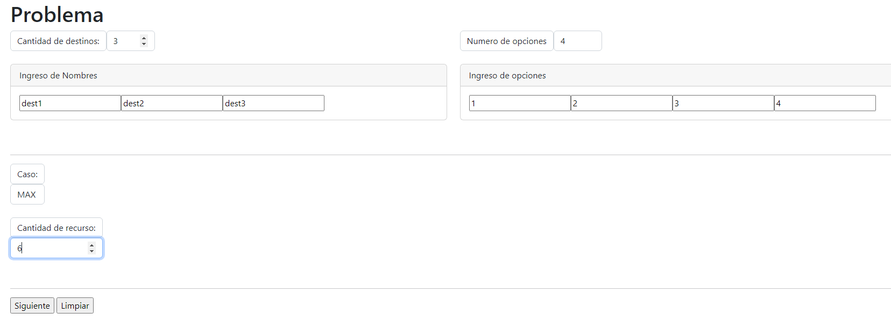
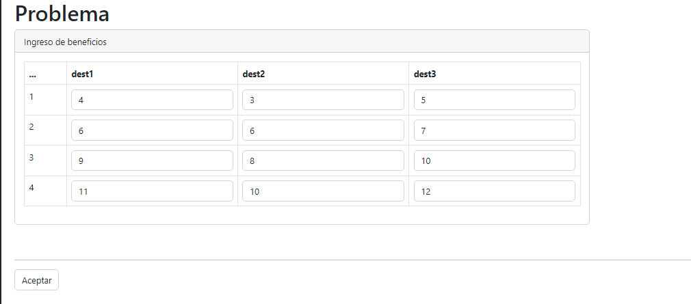
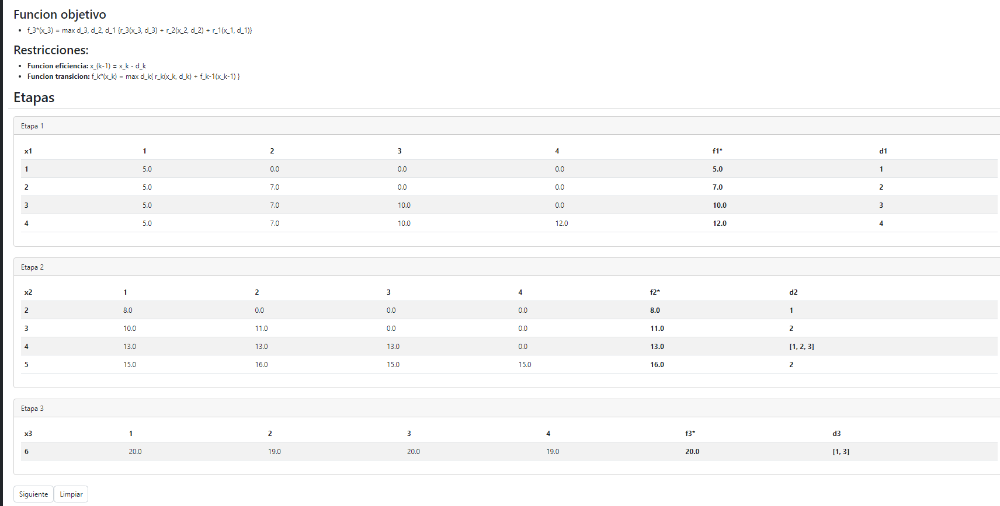

Esta aplicacion se usa de forma secuencial, primero los datos de inicio (numero de opciones de asignacion, numero de destinos a los que se va a asignar y la cantidad de recurso maximo que se debe asignar).
Posteriormente, se ingresan los datos para la tabla de beneficios
El sistema generara las etapas, que son accesibles desde el menu, o tambien al aceptar los datos de la tabla de beneficios
